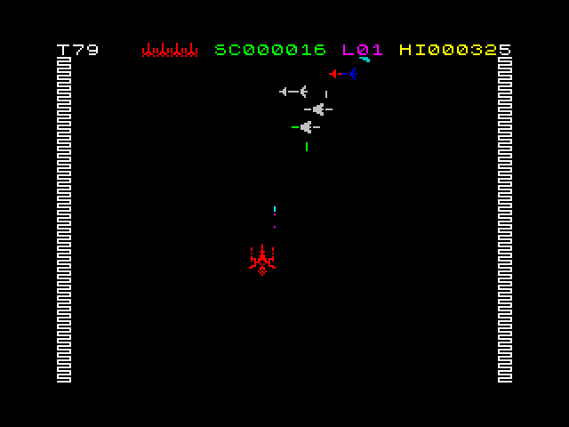

Esta es la segunda y última entrega de la serie de artículos en los que NÉSTOR LUCAS, flamante ganador del ST2003, destripa todos y cada uno de los juegos de dicha competición.
LOS JUEGOS DEL ST2003, PATAS ARRIBA (y II)
 |
Título |
Chase H.Q. |
| Género |
Arcade/Action |
| Año |
1989 |
| Máquina |
ZX Spectrum 48K/128K |
| Jugadores |
1 Jugador |
| Compañía |
Ocean Software Ltd |
| Autor |
John O'Brien, Bill Harbison & Jonathan Dunn |
| Categoría en el Tour |
Racing |
En toda competición de videojuegos que se precie no puede faltar un juego de carreras, que en esta ocasión añade el aliciente de basarse en las típicas persecuciones automovilísticas de las series policíacas.
Al principio de cada carrera, recibimos un comunicado de la central indicándonos los detalles del vehículo en el que un fugitivo está dándose a la huida. Nuestra misión es alcanzarlo y detenerlo.
Para ayudarnos en la captura del sospechoso, el coche dispone de tres turbos, que conviene guardar hasta que lo tengamos a la vista, pues la forma de detener al fugitivo es un tanto drástica: golpeando su coche hasta dejarlo inutilizable.
El juego consta de cinco circuitos, en los que perseguiremos sucesivamente a un sospechoso de asesinato en primer grado, a otro de robo a mano armada, a un vendedor de drogas, a un presunto secuestrador y a un sospechos de espionaje y asesinato. Todo ello protagonizado por una pareja de policías de la que nadie duda de su parecido con los protagonistas de la serie (de la misma época que el videojuego) titulada 'Miame vice'.
CHQ-01. Desarrollo del juego.
Como en todo juego de carreras que se precie, en Chase H.Q. tenemos un checkpoint que alcanzar antes de que se agote el tiempo para continuar con el juego. Siguiendo con el argumento, este checkpoint no es otro que avistar al sospechoso que ha iniciado la huída.
|
|
| Hay que escoger bien el camino en la bifurcación |
Antes de alcanzar al fugitivo, una de las avenidas por las que circulamos se bifurcará, teniendo que elegir uno de los dos caminos en los que se divide. Si bien por cualquiera de los dos caminos llegaremos al mismo punto y podremos atrapar al malo, recibiremos información en forma de flecha o comunicado por radio indicando cuál ha sido el camino tomado por el sospechoso, es decir, cual será nuestra ruta más corta.
Dado que el juego se centra en una persecución por las calles de una ciudad, tendremos que prestar especial atención al resto de coches que circulan por la carretera, evitando en todo lo posible tener incidentes con ellos, pues aparte de que queda muy mal y da mala imagen a las fuerzas del orden, nos resta velocidad, con lo que supone eso para el tiempo restante para alcanzar al sospechoso y, además, se resetea el valor de los puntos de bonificación que se nos otorgan por cada coche no implicado en la huída que adelantemos sin causarle daños.
|
|
| En la tercera fase, en lugar de túneles pasaremos por debajo de unos arcos |
Por otra parte, en nuestra persecución también atravesaremos túneles donde supuestamente el roce con las paredes debería frenarnos, como sucede en la recreativa original. Sin embargo, algún error de programación nos permite, de manera bastante aconsejable por cierto, pegarnos a la pared una vez dentro del túnel, para así esquivar al resto de coches que circulan por la vía. No sucede lo mismo con los arcos de la tercera persecución, que estos si hacen polvo a nuestro coche, llegando a pararnos por completo ante cualquier impacto.
Otros elementos de la carretera, como las vallas de obras y los restos de las mismas, supuestamente deberían frenarnos pero, al igual que con las paredes del túnel, los programadores debieron pensar que había que darle alguna ventaja a los sufridos jugadores de la versión para Spectrum, y así resulta que nos los podemos llevar por delante sin sufrir perjuicio alguno.
Una vez avistemos el coche sospechoso, iniciaremos la persecución propiamente dicha. Se encenderán la sirena y los rotativos de nuestro vehículo, y a base de sucesivos golpes tendremos que detener la huida del fugitivo.
Hay varias formas de hacerlo, con diversos trucos divulgados por Internet. Uno de ellos, por ejemplo, nos indica que justo antes de golpear al coche del sospechoso, reduzcamos la marcha del vehículo e instantáneamente volvamos a cambiarla, para así, si lo hacemos bien, obtener dos puntos de golpe en lugar de solo uno.
|
|
| Hay varias formas de golpear al fugitivo y provocar su detención |
Otro truco que a mí personalmente me ha resultado bastante bien es, en lugar de golpear al coche de la huida desde atrás, tratar de adelantar y golpearle lateralmente. Bien hecho resulta igualmente en dos puntos de golpe en lugar de sólo uno, con la ventaja adicional de que apenas perdemos velocidad.
Sin duda el modo más espectacular de puntuar alto en los golpes contra el coche huido es aprovechar los desniveles de la carretera, para cuando haya un salto caer encima de él, puntuando de nuevo por dos golpes en lugar de por uno solo.
Y no podemos olvidar los turbo que mencionábamos al principio del comentario de este juego. En tramos amplios, rectos, y curvos también aunque con más cuidado, podemos aprovechar los turbos para causar varios daños al vehículo en huida, siendo esta quizás la mejor forma de provocar su detención.
CHQ-02. La misteriosa puntuación extra y la expliación de Russell Marks
Durante la competición, varios jugadores detectamos un curioso comportamiento en el sistema de puntuación del juego. Resulta que en determinadas circunstancias, al finalizar cada fase aparecía una puntuación extra de 1.280.000 puntos sin que se conociera el origen de esta inusitada cifra.
Como suele ocurrir en estos casos, la situación se comentó varias veces en los grupos es.comp.sistemas.sinclair y comp.sys.sinclair, dándose posibles explicaciones de lo más variopintas. Hasta que un buen día, uno de los participantes del Tour, habitual de c.s.s., y gran partícipe del movimiento Speccy en Internet nos sorprendió con el descubrimiento de un bug en el código del juego, que era el causante de esta misteriosa bonificación.
Comenzaba Russell Marks su explicación con un desensamblado del código máquina del juego, descubriendo en la dirección 8B3Dh lo siguiente:
EX AF,AF'
LD B,A
En esta posición, el código calcula la puntuación de bonificación correspondiente al dígito de menor peso del temporizador, multiplicando 5000 por el valor contenido en B mediante un bucle posterior con el tradicional DJNZ, siendo el valor de B el que se carga con la instrucción LD B,A que vemos en el segmento de código.
Sin embargo, antes de cargar B con el valor del acumulador, se realiza un intercambio de registros, con lo que en lugar de obtener el valor de la cifra de menor peso del temporizador que estaba almacenado en A, se carga con el valor de A', sea éste cual sea.
Así pues, ¿qué contiene A' en el momento de realizar este cálculo?
Continuaba Russell su explicación en c.s.s. diciendo que existen tres posibilidades:
- Si la cifra de menor peso del temporizador es cero, la parte del código que contiene el error en el cálculo de la bonificación no se ejecuta, pues no hay que calcular el valor correspondiente a la cifra de menor peso, y por tanto, no hay posibilidad de obtener la puntuación extra.
- Si la cifra de mayor peso del temporizador es cero, entonces A' no se carga con ningún valor en ninguna parte del código, por lo que el resultado de la bonificación extra es ciertamente aleatorio.
- Si ninguna de las cifras es cero, se obtiene como puntuación extra el resultado de multiplicar 5000 por el valor BCD más alto de nuestra puntuación, salvo cuando esta es menor de un millón, situación en la que el bucle se ejecuta 256 veces, obteniendo una bonificación de 1280000 puntos.
En otras palabras, todo lo que hay que hacer para conseguir la puntuación extra es:
- Asegurarse de terminar siempre con la cifra más baja del temporizador siendo distinta de cero.
- En las fases posteriores a la primera, finalizar cada carrera dejando menos de diez segundos en el temporizador, y dejar a la suerte el valor de la puntuación extra obtenida.
De esta forma queda explicado el misterio de la misteriosa bonificación.
|
Título |
Maziacs |
| Género |
Arcade/Maze |
| Año |
1983 |
| Máquina |
ZX Spectrum 48K/128K |
| Jugadores |
1 Jugador |
| Compañía |
DK'Tronics Ltd |
| Autor |
Don Priestley |
| Categoría en el Tour |
Maze |
Estamos ante un juego que a jucio personal no era de los más adecuados para el Tour. Y no precisamente porque le faltara calidad, si no más bien por lo aleatorio de los resultados. Pero veamos primero un análisis algo más detallado del juego.
MAZ-01. Los elementos del juego
Pues bien, éste es nuestro protagonista, el caballero que arriesga su vida en el laberinto a la búsqueda del tesoro.
Este bicho con ese aspecto monstruoso es el malo que ronda por el laberinto. Debemos evitarlo a toda costa, salvo que vayamos armados con la espada. En ocasiones no queda más remedio que enfrentarse a él desarmado, y con un poco de suerte más que de habilidad podremos salir airosos del enfrentamiento, aunque la norma es más bien todo lo contrario.
El laberinto esta ocupado además por mazmorras en las que nos encontraremos prisioneros que, gentiles ellos, si les preguntamos nos mostrarán el camino hacia el tesoro, o si ya lo tenemos en nuestro poder, hacia la salida. Algunos no se explican cómo conociendo tan bien el laberinto siguen aun prisioneros, algo que no sucede en el nivel cuatro de juego, donde para indicarnos el camino tenemos que liberarles, vamos, que desaparecen del juego.
En la parte derecha de la pantalla vemos una barra de energía que por momentos va decreciendo. Esa es la energía de que dispone nuestro caballero en su búsqueda del tesoro, y que por todos los medios tenemos que evitar que llegue a cero. Para eso se encuentran repartidos por el laberinto varios bloques de alimento como el ilustrado. A la hora de cogerlos, tengamos en cuenta que también nos hará falta energía en el camino de regreso con el tesoro.
Es la única arma de que disponemos, con la peculiaridad que cada vez que nos enfrentamos a un bicho, perdemos la espada. Así pues, escondidas por el laberinto hay también repartidas espadas que tendremos que recoger cada vez que usemos una en despejar el camino de bichos.
Nuestro objetivo final es conseguir este tesoro y volver al punto de partida con él. Cuando cargamos con el tesoro no podemos llevar espada, así que más nos vale haber despejado antes el camino de regreso de bichos.
En cualquier momento del juego podemos consultar el mapa del laberinto para orientarnos y decidir qué camino seguir. Hay que tener presente que el hecho de inspeccionar el mapa no para el juego, así que si hay algún bicho cerca, corremos el riesgo de ser atacados por sorpresa, lo que significa en la mayoría de los casos que aunque llevemos la espada el bicho podrá con nosotros.
MAZ-02. El juego
Como ya he comentado al principio, el juego es en sí un laberinto, cuyo sistema de puntuación se basa en la diferencia entre el camino óptimo entre el punto de partida y el tesoro (ida y vuelta), y el camino seguido por nosotros, realizando una sencilla regla de tres en la que se otorgan cien puntos al camino óptimo.
A esta puntuación hay que añadirle un plus en función del nivel escogido, pues cada aumento de nivel significa un incremento de la dificultad, tanto en el tamaño del laberinto, como en el comportamiento de los demás elementos.
|
|
| Encontrar el tesoro es nuestro principal objetivo |
Así, cuanto más alto sea el nivel (de 1 a 4), más inteligentes serán los bichos, es decir, que en el nivel 1 su movimiento es más bien errático, siendo en el nivel 4 dotados de cierta inteligencia que les hace capaces de perseguirnos y encontrar caminos hacia donde nos encontramos.
Otro cambio a tener en cuenta en los niveles superiores es el comportamiento de los prisioneros. En los niveles más bajos les podemos preguntar por el camino hacia el tesoro tantas veces como nos apetezca. Sin embargo, en el nivel más alto nos conviene preguntar sólo cuando es necesario, pues al preguntarles les liberamos, y ya que se conocen tan bien el laberinto, pues se se van para nunca volver.
Pocos consejos se pueden dar sobre este juego, en el que el azar cobra un importante papel. Y es que más que de nuestra habilidad como jugadores, la puntuación final depende de la suerte que tengamos en la generación del laberinto. Todo lo más que os puedo decir es que no despreciéis una buena consulta al mapa de vez en cuando.
|
Título |
Mikie |
| Género |
Arcade/Action |
| Año |
1985 |
| Máquina |
ZX Spectrum 48K |
| Jugadores |
1 Jugador |
| Compañía |
Imagine Software Ltd |
| Autor |
Jonathan Smith & Martin Galway |
| Categoría en el Tour |
Arcade |
Sin duda uno de los juegos más populares del Tour, junto con el Tetris, el Supertest y el Chase H.Q., es Mikie. Y no es para menos con un arcade al más puro estilo tradicional.
MIK-01. La base del juego
El juego lo protagoniza un estudiante de instituto, cuyo nombre no sorprende, Mikie. Su objetivo es enamorar a una chica que nos espera fuera de las dependencias del instituto y, para lograrlo, debe recoger todos los corazones que hay repartidos por las diferentes dependencias del centro. Un argumento bastante similar al también arcade Popeye, todo hay que decirlo, pero con un toque roquero que se pone de manifiesto en la pantalla del menú con la canción "A Hard Day's Night" de The Beatles.
MIK-01.1. Los personajes del juego
Éste es Mikie, el adolescente protagonista del juego.
El profesor tratará de poner fin a la huída de clase emprendida por Mikie. Para ello nos perseguirá por todo el instituto, aumentando su velocidad cuanto más tiempo permanecemos en una estancia, y siendo además el único que cuando se cabrea de verdad nos ataca tirándos algo que parece una boca.
Nos lo vamos a encontrar en todos los pasillos y en algunas estancias del instituto, llegando hasta triplicarse en el patio donde nos espera nuestra enamorada. Eso sí, un gran trabajador, porque allá donde nos persiga, estará siempre barriendo.
En el gimnasio y en la cocina aparece este otro personaje del personal del centro. Es como el profesor, que nos persigue para atraparnos y darnos una reprimenda. Pero se diferencia de éste en que su velocidad no aumenta con el paso del tiempo, y que no nos lanza nada, con lo que resulta más inofensivo.
Están en el gimnasio, con su clase de baile. Van todas en formación hasta que una de ellas improvisa un nuevo paso de baile y se sale de la formación. Hay que esquivarlas a toda costa, pues aunque no detienen a Mikie, como adolescente que es le vuelven loco las chicas, y se queda atontado unos instantes. Los justos para que le atrape el profesor.
Detrás de las puertas sorpresa de los pasillos se puede esconder esta sugerente chica, que igual que eleva la moral de nuestro personaje, hace lo propio con los puntos, dándonos una bonificación extra. Solo hay una chica por pasillo.
Una vez recogidos todos los corazones nos espera esta chica, la chica de los sueños de Mikie, en el jardín.
MIK-02. Jugando a Mikie
Empezamos el juego en la clase de Mikie. Su novia le espera fuera, en el jardín, y para demostrarle su amor, nuestro playboy protagonista debe recoger todos los corazones desperdigados por el instituto.
En la clase los corazones se encuentran escondidos debajo de los pupitres. Para poderlos coger tenemos que despejar primero el pupitre correspondiente y, como los compañeros de clase son tan poco colaboradores, sólo hay una opción: empujarles.
Como vemos durante el juego, los corazones aparecen siempre de color negro, salvo por el hecho de que secuencialmente hay uno que está parpadeando. Si recogemos los corazones según parpadeen, obtendremos una puntuación más alta por el corazón recogido de esta forma. Además, si logramos que todos los corazones sean recogidos al parpadear haremos un nivel perfecto, lo que supone una bonificación extra.
Además de la puntuación extra por recoger los corazones en el momento adecuado, cada estancia del juego oculta una bonificación extra que iremos desvelando según avancemos por las diferentes instalaciones del centro.
En el caso de la clase donde se inicia el juego, tenemos que situarnos frente a la mesa del profesor, mirando hacia la pizarra. Allí gritamos tres veces y veremos que aparece un objeto sobre la mesa, señal de que hemos obtenido 1000 puntos extra. A modo de indicación para esta primera ocasión, en la imagen que da pie a este apartado podéis ver a nuestro amigo Mikie gritando en la ubicación indicada.
Cuando hayamos recogido todos los corazones, con o sin bonus, se iluminará un cartel en una de las puertas indicándonos la salida. Solo queda ir a esa puerta, abrirla (botón de disparo), y salir al pasillo.
Los pasillos son las vías de comunicación entre las demás estancias del instituto, como es de esperar. La siguiente habitación a la que debemos dirigirnos tiene un cartelito iluminado sobre la puerta, con el texto 'IN'. Se entra igual que salimos de la clase.
Además de la puerta que nos llevará a la siguiente clase, en los pasillos hay más puertas que se pueden abrir, que son las que no tienen ventana. Estas puertas esconden sorpresas. En la mayoría de las ocasiones nos encontraremos puñetazos o patadas, que podemos esquivar tal y como se ve en la imagen, colocándonos en el extremo izquierdo de la puerta a la hora de abrirla.
No todo son golpes, pues detrás de la puerta, si persistimos, aparecerá una chica que elevará la moral de nuestro intrépido playboy, reflejándose esto en los puntos con una bonificación extra.
En los pasillos tendremos que esquivar todo contacto con el conserje y el profesor. Este último, como en cualquier dependencia, acelerará su marcha cuanto más tiempo permanezcamos en la misma estancia. Así que no conviene demorarse mucho. A estos perseguidores tenemos que añadir el cubo del conserje, que de repente aparecerá desde cualquier extremo, a toda velocidad, y si nos pilla en medio nos restará una vida. En este primer pasillo sale siempre desde la derecha.
El pasillo cuenta con tres niveles en vertical. En ocasiones, el profesor y el conserje se situarán en el mismo nivel, lo que, salvo que utilicen el nivel central, nos deja cierta movilidad.
En ocasiones nuestros perseguidores se separan en dos niveles del pasillo. En estos casos, siempre que la distancia entre ambos nos lo permita, lo mejor es situarnos en el nivel extremo (superior o inferior) ocupado por uno de ellos, y hacer el cambio de nivel al pasar al otro perseguidor. No es un método 100% seguro, pero sí es cierto que funciona en la mayoría de las ocasiones.
Otro truco que leí en c.s.s. decía de cambiar rápidamente de posición entre los dos niveles ocupados. Sin embargo, en mi experiencia práctica el porcentaje de error es superior al anterior método, así que dejo esta posibilidad solo para cuando la separación de niveles entre profesor y conserje es dejando el nivel central libre.
La siguiente estancia en la que tendremos que recoger los corazones para nuestra amada es el vestuario. Aquí los corazones se encuentran dentro de las taquillas, y para cogerlos tenemos que situarnos enfrente de la taquilla correspondiente, mirando hacia ella, y gritarle una vez por cada corazón que tenga.
Igual que en la clase, se nos dará una puntuación extra si cogemos los corazones cuando estén parpadeando, con la diferencia de que en este caso cuenta el punto extra cuando es el último corazón de la taquilla el recogido cuando parpadea (los demás da igual si lo hacen).
En color rosáceo hay unos cestos donde se guardan balones de baloncesto. Estos balones podemos cogerlos con el disparo, y lanzárselos al perseguidor que esté más cerca. Si lo coge se pondrá a botarlo por unos instantes, quedándose quieto en su sitio, con la ventaja que eso conlleva.
En esta estancia la bonificación extra se encuentra en las taquillas de la parte superior. Concretamente en la segunda taquilla empezando a contar desde la izquierda. Nos situamos frente a ella, la gritamos por tres veces y ya tenemos la bonificación.
Si nos esforzamos por hacer un nivel perfecto en esta fase podemos encontrar un fallo de programación, que en el caso más suave se resuelve sin demasiadas complicaciones.
Resulta que si conseguimos hacer el perfecto, en este nivel no se iluminará el cartel de la puerta de salida, quedándonos aparentemente atrapados en la habitación. En realidad resulta que por un fallo de programación, se contabiliza un corazón de menos en la última taquilla en la que los hemos recogido. Solo tenemos que volver a esa taquilla y hacer lo mismo que para recoger un corazón, que subirá al marcador, y nos iluminará el cartel de salida.
En el peor de los casos, todo se resolverá igual, pero de alguna manera extraña no funcionarán las máscaras de los sprites, vamos, que iremos marcando rastro por toda la pantalla, haciendo el juego casi impracticable. De todas formas, es raro que suceda esto último.
Poca novedad hay en este pasillo respecto al primero. En esta ocasión tenemos que bajar por las escaleras, diferenciándose la versión de Spectrum de su homónima en arcade en el hecho de que en nuestro Speccy el profesor se queda arriba, y el conserje esta siempre abajo, y en la recreativa nos persiguen también por la escalera.
En cualquier caso, los consejos para el primer pasillo son válidos para este pasillo, así que sin más pasamos a comentar la siguiente dependencia.
Aquí estarán persiguiéndonos dos cocineros y el profesor. Tenemos que recoger los corazones repartidos por el suelo, y los que están en la mesa. Estos últimos se recogen como los que se encontraban en las taquillas del vestuario.
En tres de las cinco mesas vemos una especie de botes, que en realidad por su contenido deben ser más bien ollas. En ellas hay tres pollos asados, que podemos recoger igual que hacíamos con los balones en el vestuario, y lanzárselos al perseguidor que este más cercano. Éste, si lo recoge, se pondrá a comerlo, quedándose igual de quieto que si estuviera botando un balón.
Al igual que sucedía en el vestuario, podemos tener el problema de que, al recoger el último corazón de la pantalla, no se activa el indicador de la puerta de salida. La solución es la misma que antes, estando en esta ocasión el corazón oculto en la mesa del centro, donde estaban los demás corazones.
Como no podía ser menos, en el comedor hay también una bonificación oculta. Esta vez se esconde en la zona de dispensación de la comida, donde vemos los platos en la parte superior, en color cyan oscuro. Nos situamos frente al plato del centro, mirando hacia él, y gritamos tres veces. La puntuación extra subirá al instante a nuestro marcador.
|
|
| El retorno al primer pasillo |
Volvemos al primer pasillo, esta vez en las plantas inferiores. Y, como podemos apreciar en la imagen, no hay diferencias entre la forma de superar este pasillo y el segundo como lo hicimos hace un rato.
Cuando llegamos al gimnasio nos encontramos con una clase de baile compuesta únicamente por chicas. Aquí sólo nos va a perseguir el profesor, aunque no podemos despreciar el efecto que un simple roce con las chicas produce en Mikie: lo atonta lo suficiente para que pueda llegar el profesor y atraparnos.
Recogemos los corazones con cuidado, teniendo en cuenta un detalle que nos resultará provechoso. Si caminamos pegados a las paredes esquivaremos siempre a las chicas, aun cuando se salgan del grupo para dar sus espectaculares pasos individuales.
La puntuación extra oculta en esta estancia está en el altavoz de la izquierda. Solo hay que situarse frente a él y, como hemos hecho hasta ahora, gritar tres veces.
Salimos al segundo pasillo otra vez, en esta ocasión en la planta inferior, sin disponer de escaleras, siendo esta vez similar al primer pasillo que superamos, en la tercera planta del primer pasillo.
Finalmente llegamos al jardín, donde nos espera nuestra enamorada. El profesor se ha quedado en el centro, así que aquí nos perseguirán tres conserjes a modo de jardineros.
Por tratarse de la última fase, aquí no tenemos puntuación extra, ni puerta. Solo a nuestra novia, que nos espera a que terminemos de recoger los corazones que quedan desperdigados por el jardín. Una vez los tengamos todos, nos acercamos por la izquierda a nuestra novia, entrando justo en el hueco que queda a su lado, y con esto finalizamos... la ronda.
Sí, digo la ronda porque, una vez terminemos de celebrar haber llegado hasta la novia de Mikie, empezaremos de nuevo desde la clase, aumentándose la dificultad por dos partes: el número de corazones a recoger y la velocidad inicial del profesor.
|
Título |
Jumping Jack |
| Género |
Arcade/Platform |
| Año |
1983 |
| Máquina |
ZX Spectrum 48K |
| Jugadores |
1 Jugador |
| Compañía |
Imagine Software Ltd |
| Autor |
Albert Ball & Stuart C. Ball |
| Categoría en el Tour |
Small Skill |
Bueno, pues estamos ante un juego de habilidad sencillo de desarrollo, en el que podemos alcanzar altos niveles y buenas puntuaciones con algo de paciencia.
|
|
| El primer nivel de Jumping Jack |
Como véis en la imagen, el juego se compone inicialmente de nuestro protagonista, Jack, y de ocho pisos. El objetivo del juego es alcanzar el último piso, saltando por los agujeros que se forman en el suelo, y que se desplazan entre ellos a izquierda o derecha.
La peculiaridad de estos agujeros es que, una vez llegan al extremo de la pantalla opuesto a por donde aparecieron, continuan desplazándose por el siguiente piso. Es decir, tenemos por ejemplo un agujero que se desplaza de derecha a izquierda. Cuando este agujero llega al extremo izquierdo del piso, aparece a continuación en el extremo derecho del piso superior, siguiendo con su recorrido. Si el piso es ya el más alto, entonces reaparece por el piso inferior, y así se repite indefinidamente. Si, por el contrario, el agujero se desplaza de izquierda a derecha, en lugar de continuar por el piso superior lo hace por el inferior.
La primera dificultad añadida al juego es el aumento en el número de agujeros. Cuando Jack se encuentra en la planta baja, por debajo del primer piso, solo hay un agujero que, por el azar del juego, seguirá una u otra dirección. Una vez saltemos a través de él alcanzando el primer piso, aparecerá un nuevo agujero en cualquier punto determinado por el azar, siendo el sentido de circulación determinado por el mismo aspecto aleatorio.
Los agujeros solo sirven para saltar al piso superior. En ningún caso podemos saltar por encima de ellos sin llevarnos un golpe con el piso de arriba, que nos dejará muy aturdidos, pudiendo aparecer otro agujero en el piso en el que nos encontramos y caernos por el al piso inferior.
Hay que tener en cuenta un detalle, y es que Jack puede salir por los extremos de cada piso, apareciendo siempre en el extremo opuesto de por donde desapareció, siempre en el mismo piso. Es una buena forma de, en algunas ocasiones, esquivar agujeros y enemigos.
Jack no pierde vidas si se golpea con los pisos superiores, se cae por los agujeros o se golpea con los enemigos que aperecen en los niveles superiores. Tan solo resulta aturdido, sin podernos mover hasta pasado un rato en el que se recupera, si antes no hemos caido por un agujero que haya aparecido, o nos ha golpeado otro enemigo. Las vidas se pierden cuando caemos al nivel inferior.
El tiempo que Jack permanece aturdido depende de la forma en la que llega a este nivel. Lo que más le aturde es cuando se golpea con el techo del piso superior, seguido de los golpes con los enemigos, para ser el menos grave cuando se cae por uno de los agujeros.

|
| El número de enemigos aumenta |
Según vamos superando fases, van apareciendo enemigos en los diferentes pisos. Estos enemigos circulan todos a la misma velocidad hacia la izquierda, recorriendo los pisos de abajo a arriba como si fueran agujeros.
El número de enemigos aumenta a razón de un enemigo por cada nivel superado. La posición relativa entre ellos es siempre la misma, incluso entre niveles. Sin embargo, su posición relativa respecto a los agujeros varia por cada vez que consiguen llegar a la última planta, pues los agujeros reaparecen más tarde que ellos.
Considerando el comportamiento de los enemigos, el mejor truco para alcanzar el piso de arriba es utilizar un agujero que se dirija hacia la izquierda (vamos, de los que suben), y que disponga de espacio libre a su derecha equivalente al ancho de un piso. De esta forma, salvo por la aparición de los nuevos agujeros, el camino hacia la parte superior es fácil, únicamente perjudicado por la paciencia necesaria para esperar a que se dé la situación adecuada para subir, tiempo que suele aumentar a cada nivel.
El último nivel del juego no permite recurrir al truco indicado, pues no existe hueco entre los enemigos equivalente al ancho de un piso. En este caso todo lo que podemos esperar es que no se junten dos agujeros, y que *siempre* haya hueco suficiente a la derecha de los mismos, para que al menos al alcanzar el piso no seamos golpeados al instante por uno de los enemigos.
Y eso es todo lo que os puedo comentar del juego.
|
Título |
Arcadia |
| Género |
Arcade/Shoot'em Up |
| Año |
1982 |
| Máquina |
ZX Spectrum 16K |
| Jugadores |
1 Jugador |
| Compañía |
Imagine Software Ltd |
| Autor |
David H. Lawson |
| Categoría en el Tour |
Small Shoot'em'up |
Nos encontramos ante el último juego del Tour, y no por ello el menos interesante. Como es de esperar, no podía faltar un clásico matamarcianos, que en esta ocasión ha ocupado la categoría de pequeño shoot'em'up, no por ser de baja calidad, que no lo es, sino por su reducido tamaño. Y es que en la época dorada del software de 8 bits, el tamaño si importaba.
Bromas aparte, Arcadia representa a los clasicos arcades matamarcianos en los que con nuestra nave tenemos que ir acabando con todos los enemigos que aparecen por la pantalla.
Como era bastante habitual por la época, en lugar de seguir un scroll vertical u horizontal, el juego se divide en fases por pantallas, como en la recreativa Galaxian, pero con enemigos diferentes en cada pantalla.
El objetivo del juego no es acabar con todos los enemigos de cada pantalla, pues una vez hecho esto aparece una nueva oleada, y así hasta que se agote un temporizador que tenemos en la parte superior izquierda de la pantalla, que dura un minuto y medio aproximadamente. El objetivo es pues, aguantar todas las oleadas que podamos durante el tiempo indicado, finalizado el cual pasaremos a la siguiente fase.
Hay que tener cuidado, pues cuando el temporizador llega a cero todas las naves presentes en la pantalla se precipitan hacia abajo y, si nos pillan en medio, pues nos restan una vida, teniendo además que repetir la fase correspondiente. Vamos, que no hay nada como despejar un hueco en vertical para tener ciertas garantias de que cuando se precipiten no impactaran contra nuestra nave.
El juego no tiene final, siendo uno de estos juegos en los que una vez superas la última fase, vuelves a empezar desde el principio. Y lo que es mejor, en este caso, sin que apenas se perciba un aumento en la dificultad. Si a todo esto le añadimos que cada cuatro fases nos dan una vida extra, tenemos el juego perfecto para tirarnos horas y horas una vez le pillemos el truco... si las muñecas aguantan (y lo digo por experiencia).
El sistema de puntuación es de progresión aritmética. En la primera fase cada nave enemiga eliminada cuenta un punto, en la segunda, dos, en la tercera tres, y así sucesivamente fase tras fase. No es difícil darse cuenta el incremento de puntuación que significa tan solo una ronda más.
ARC-1. El comportamiento de los enemigos, o consejos para superar cada nivel
Lo primero que debemos tener en cuenta es que los enemigos *nos* disparan a la vez que recorren la pantalla según una trayectoria predefinida con la intención de chocar contra nosotros. Vamos, que son un poco kamikazes. Sabiendo eso y conociendo el patrón de trayectoria que van a seguir tenemos amplias posibilidades de superar al menos una vuelta a todo el juego.
| 
|
| Los enemigos de la primera fase |
En la primera fase los enemigos son un grupo de naves que aparece realizando un recorrido descendente diagonal hacia la izquierda desde una ubicación próxima a donde esta el indicador del nivel actual.
Hay muchas formas de superar esta fase, siendo mi preferida situarme un poco más a la izquierda de donde aparecen por pantalla las naves enemigas, lo más arriba que se nos permite subir, y quedarme disparando. Cuando aparecen las naves, se deja caer nuestra nave, y con un poco de suerte habremos eliminado todas las naves enemigas. Si queremos aumentar la probabilidad de exito, podemos dejarnos caer hacia la izquierda, siguiendo la trayectoria de las naves.
|
|
| Los originales enemigos de la segunda fase |
En la segunda fase las naves enemigas descienden en vertical, haciendo un ligero zigzag con el que se desplazan horizontalmente.
La manera que recomiendo para superar esta fase parte del mismo principio que la anterior, es decir, subiendo la nave lo más alto que podamos. Según aparezcan las naves enemigas, empezamos a disparar de forma contínua, a la par de dejarnos caer, con un ligero zigzag sin desplazarse en lo horizontal de manera absoluta. De esta forma creamos un hueco en la barrera enemiga consiguiendo así evitar que impacten contra nosotros.
Con el hueco creado podemos tratar de eliminar el resto de naves enemigas de la oleada, sin arriesgar demasiado. Solo hay que tener presente que cuando acabemos con la oleada, aparecerá otra nueva hasta que agotemos el tiempo.
|
|
| Los platillos volantes de la tercera fase |
En esta tercera fase aparece un grupo de platillos volantes cuyo movimiento se caracteriza por oscilar en torno a un punto que se desplaza horizontal y verticalmente de la misma manera oscilante, manteniendo siempre la formación dentro de una misma oleada.
Acabar con la primera oleada resulta bastante fácil pero, aunque no es una maniobra respetada por algunos jugadores, no lo recomiendo. Esto se debe a que la segunda oleada que aparece puede hacerlo con un desplazamiento brusco vertical, impactando alguna de las naves directamente contra la nuestra. Y claro, mejor aguantar con una nave de la primera oleada hasta que se agote el tiempo que arriesgar una vida... Salvo que ya dispongamos de unas cuantas.
Al superar esta fase obtenemos una vida extra.
Las naves de esta fase tienen una forma alargada, como de aguja, y se precipitan hacia abajo a toda velocidad, siguiendo a la par líneas irregulares en zigzag en la horizontal.
A mi juicio son de las más puñeteras, pues a la velocidad con la que se desplazan hay que añadir que su pequeño tamaño hace que nuestros disparos a veces pasen de largo.
La mejor manera de pasar esta fase es eliminar un grupo de 'agujas' que dejen un hueco vertical, independientemente de aguantar con la primera oleada o arriesgándonos con varias.
En esta fase las naves se asemejan a unos pájaros que, mientras descienden hasta nuestra posición, se dedican a dispararnos.
La eliminación de estos 'pájaros' no entraña ningún misterio, ya que como permanecen casi sobre la misma vertical, acertarles y eliminarles es disparar y mirar.
Ésta es una buena ocasión para aprovecharse y eliminar cuantas oleadas, las que nos permita el tiempo disponible.
Las he llamado hormiguitas porque van todas juntas, en fila. Se desplazan haciendo un barrido de la pantalla de izquierda a derecha y de derecha a izquierda, bajando un poco en cada recorrido horizontal completado. Además no se cansan de dispararnos una y otra vez.
El modo de acabar con estas hormiguitas es situándose en lo más alto posible y, con el cuidado de esquivar sus disparos, comenzar a disparar sin soltar el botón del disparador por un solo instante.
Cuando son pocas hormigas las que quedan en pantalla, puede resultar algo más complicado acertarlas. En estos casos es buen truco esperar a que estén a tiro y, para asegurarnos el impacto, disparar en ráfaga mientras nos desplazamos en el mismo sentido en que lo hace la nave enemiga.
En cuanto a las oledas, dado que estas naves forman una barrera horizontal completa, conviene acabar tan solo con una oleada, dejando una nave de la segunda oleada para tenerla controlada y esquivarla cuando el temporizador vaya a llegar a cero. De todos modos, hay que ser muy hábil para que el tiempo restante cuando dejemos solo una nave de la segunda oleada sea considerable.
No sé a vosotros, pero a mí las naves de esta fase me recuerdan a ciertas torres de antenas. Será deformación profesional.
En fin, las naves de esta fase se desplazan hacia abajo siguiendo un zigzag horizontal, al estilo de las de la segunda fase, pero con un zigzag más amplio y una mayor diferencia en la posición vertical relativa entre naves.
Como venimos haciendo hasta ahora, al comenzar la fase subimos la nave al máximo permitido y comenzamos a disparar, dejándonos caer a la parte inferior mientras que con un movimiento oscilante en la horizontal despejamos la vertical.
Ésta, como la de los pájaros, es una buena fase para puntuar eliminando tantas oleadas como nos plazca. Eso sí, siempre teniendo presente el tiempo restante indicado en el temporizador.
Al superar esta fase obtenemos una vida extra.
Por llamarlas de alguna forma, a las naves de esta fase las llamaremos los conos.
El movimiento que describen los conos en la pantalla es una gran variación respecto a los vistos hasta ahora. Se despliegan desde la parte superior describiendo trayectorias diagonales hacia izquierda y derecha, manteniéndose siempre en la misma trayectoria.
Superar esta fase ya requiere cambiar un poco de táctica. Pero sólo un poco pues, como hasta ahora, para mi gusto lo mejor sigue siendo elevar la nave y empezar a disparar. Tenemos que procurar situarnos donde cae la parte izquierda del marcador de puntos. Desde ahí, empezamos a disparar, manteniéndonos esta vez arriba, esquivando hacia izquierda y derecha las naves que van apareciendo.
Siguiendo esta estrategia podemos ir eliminando poco a poco las naves, despejando el camino y bajando ya a la parte inferior cuando veamos que va quedando hueco libre.
Es fácil caer en la tentación de eliminar la oleada completa y, bueno, mermar la segunda oleada y dejar el hueco libre es fácil una vez se le coge el truco a esta fase, así que una vez hayáis practicado, no lo dudéis, a por la segunda oleada.
Llegamos a una fase caracterizada por unas naves realmente incordiantes. No sólo no siguen una pauta firme, si no que además tienen la mala costumbre de dividirse en grupos que suben y grupos que bajan.
En sí estas naves realizan un recorrido cuadrangular. Vamos, que o bien van hacia la izquierda, hacia arriba, hacia la derecha y luego hacia abajo, o bien hacia la izquierda, hacia abajo, hacia la derecha y hacia arriba, o los otros dos movimientos especulares que quedan.
Aquí poco truco puede haber más allá de mantener la nave siempre en alto, por aquellas naves que aparecen también desde abajo, y lo más centrada posible, por las que se cuelan desde los laterales.
Al superar esta fase obtenemos una vida extra.
Las naves de esta fase forman en fila, creando una barrera horizontal. Dentro de la fila, se mueven describiendo una trayectoria hazia la izquierda, luego hacia abajo, después a la derecha y finalmente hacia arriba. Y así hasta llegar a la parte inferior de la pantalla.
Como siempre, para ganar tiempo, el consejo es situarse en lo más alto de la pantalla que se nos permite, comenzando por uno de los extremos, a gusto del consumidor, y empezar a disparar, desplazándonos hacia el otro extremo según vayamos eliminando naves enemigas, y con cuidado de dejarlas pasar si están muy próximas a la parte inferior de la pantalla.
El número de oleadas ideal para esta fase es de dos, aunque se puede llegar a una tercera. Todo depende de nuestra habilidad para aprovechar el tiempo disponible.
En esta fase las naves parecen de nuevo unos pájaros, pero esta vez más grandes.
En esta ocasión las naves, cuando aparecen, realizan picados hacia la parte inferior de la pantalla, permaneciendo a una altura próxima al borde, no siempre la misma, esperando a que pasemos sobre la vertical de su posición. Cuando lo hacemos, desaparecen por la parte inferior para reaparecer desde arriba con un nuevo picado, quedándose esta vez esperando por la zona intermedia de la pantalla. De nuevo, al pasar por su vertical, desaparecen picándose hacia abajo, para reaparecer por arriba y quedarse casi por donde salen, de nuevo esperando a que pasemos por su vertical.
Las oleadas en esta fase son aleatorias, llegando al punto de que pueden aparecer pájaros en cualquier momento.
Podría parecer que la mejor forma de eliminar a los pájaros es dejando que llegen a la parte inferior, pasando por encima de ellos, dejando así que al reaparecer se queden en el centro de la pantalla y dispararlos entonces. Pero sucede que aparte de que pueden aparecer nuevos pájaros que nos ocupen la parte inferior, no dejándonos hueco posible entre la línea media y la inferior, cuando se lanzan en picado, si no tenemos suerte en el disparo, puede esquivarlo y acabar impactando su nave contra la nuestra.
En realidad no hay una estrategia definida para superar esta fase. Por mi parte, me suelo situar arriba, por la zona izquierda del marcador de puntos, disparando constantemente, ya que parece ser la zona predilecta para que aparezcan los pájaros. De esta forma elimino, con algo de suerte, todos los pájaros antes de que sean visibles.
Cuando se hacen visibles, me dejo caer tratando de destruirlos antes de que lleguen al nivel inferior. Y si consiguen llegar, entonces recurro al método que criticaba hace un momento.
|
|
| La fase final, las esferas |
Las esferas que hacen de naves enemigas en esta última fase hacen un recorrido curioso y a veces peligroso. Aparecen desde arriba, como es habitual, precipitandose hacia la parte inferior de la pantalla. A una altura aleatoria, cada esfera gira de repente, y se precipita horizontalmente a izquierda o derecha, para antes finalmente girar de nuevo y precipitarse otra vez hacia abajo hasta desaparecer, para luego reaparecer por arriba.
La estrategia a seguir en esta ocasión pasa, de nuevo, por subir lo más alto posible y disparar como un poseso. Hay que mantenerse en lo alto, esquivando las esferas según caen, salvo que alguna de ellas empiece a girar horizontalmente a nuestra altura, en cuyo caso habrá que hacer un quiebro bajando, pasando por debajo de ella y subiendo de nuevo. Si es posible al pasar por debajo de ella la disparamos, a ver si de paso la eliminamos.
Una vez superemos esta fase obtendremos una nueva vida extra, y pasaremos a la fase 13, que será una copia de la 1. Después seguira la fase 14, que será copia de la 2, y así sucesivamente.
ARC-2. Comentario final sobre Arcadia: '¿Tourable' o 'no tourable'?
Bien, he de reconocer que siendo esta mi primera participación en el Tour, puede que no esté del todo muy centrado en este comentario, si bien es un tema que se discutió, no sin cierto acaloramiento, en los foros de World of Spectrum y de comp.sys.sinclair.
Entre otras características que los organizadores del Tour tienen en cuenta a la hora de proponer los juegos candidatos para cada edición, una de ellas es evitar que el juego sea maratoneable. Y bien, ¿qué es eso de maratoneable?
Se dice de un juego que es maratoneable (venga, otra vez) cuando se dan las condiciones necesarias para que el juego no tenga fin y se convierta en una escalada de puntos para los jugadores más hábiles, pudiendo así descompensar las puntuaciones finales de la tabla en el Tour.
En el caso de Arcadia estas condiciones se daban en toda regla, pues las fases se repiten en ciclos de 12 niveles, sin apenas aumento palpable de la dificultad, con el añadido de que cada cuatro niveles superados se obtiene una vida extra.